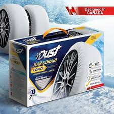
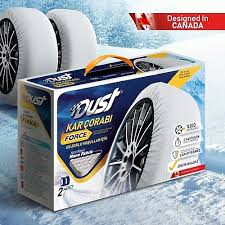

Otomobil Jantları: Bilmeniz Gerekenler
Otomobil jantları, bir aracın performansı, görünümü ve güvenliği açısından kritik bileşenlerdir. Jantlar, lastiklerin montajını sağlayarak aracın yol ile temasını ve sürüş konforunu optimize eder. Bu yazıda, otomobil jantlarının çeşitleri, özellikleri ve seçiminde dikkat edilmesi gereken noktaları ele alacağız.
Jant Çeşitleri
Otomobil jantları, yapıldıkları malzeme ve üretim yöntemlerine göre farklı kategorilere ayrılır. İşte en yaygın jant çeşitleri:
- Çelik Jantlar: Çelik jantlar, dayanıklılığı ve uygun fiyatı nedeniyle yaygın olarak kullanılır. Genellikle ağırdırlar ve bu da yakıt verimliliğini olumsuz etkileyebilir. Ancak, kış aylarında ve zorlu yol koşullarında dayanıklılıkları sayesinde tercih edilirler.
- Alüminyum Alaşımlı Jantlar: Alüminyum alaşımlı jantlar, hafif yapıları ve estetik görünümleri ile bilinir. Hafif olmaları, yakıt verimliliğini artırır ve araç performansını iyileştirir. Ayrıca, korozyona karşı dirençlidirler.
- Magnezyum Alaşımlı Jantlar: Magnezyum alaşımlı jantlar, alüminyumdan daha hafif ve daha dayanıklıdır. Yüksek performanslı ve spor otomobillerde yaygın olarak kullanılır. Ancak, üretim maliyetleri yüksektir ve bu da fiyatlarını artırır.
- Dövme Jantlar: Dövme jantlar, alüminyum veya magnezyum alaşımlarının dövülmesiyle üretilir. Bu yöntem, jantların daha sağlam ve hafif olmasını sağlar. Yüksek dayanıklılık ve performans sunan dövme jantlar, genellikle yarış araçlarında tercih edilir.
Jant Seçiminde Dikkat Edilmesi Gerekenler
Otomobil jantları seçerken dikkate almanız gereken birkaç önemli faktör bulunmaktadır:
- Jant Boyutu: Jant boyutu, aracın performansı ve sürüş konforu üzerinde doğrudan etkilidir. Daha büyük jantlar, daha iyi yol tutuşu ve estetik görünüm sağlarken, daha küçük jantlar yakıt verimliliğini artırabilir. Aracınızın üretici tarafından önerilen jant boyutlarını dikkate alarak seçim yapmalısınız.
- Offset (Ofset): Jant ofseti, jantın montaj yüzeyinin orta hattına olan uzaklığıdır. Doğru ofset, lastiklerin düzgün hizalanmasını ve aracın dengesini sağlar. Yanlış ofset, direksiyon ve süspansiyon sisteminde sorunlara yol açabilir.
- Bolt Deseni: Jantların bijon deliklerinin düzeni ve sayısı, aracınızın tekerlek bijonlarına uyumlu olmalıdır. Doğru bolt deseni, jantların güvenli bir şekilde monte edilmesini sağlar.
- Malzeme ve Yapı: Jantların yapıldığı malzeme, dayanıklılık, ağırlık ve performans açısından önemlidir. İhtiyacınıza ve bütçenize uygun malzeme ve yapıdaki jantları seçmelisiniz.
Jant Bakımı
Jantların uzun ömürlü ve performanslı kalabilmesi için düzenli bakım yapılması gerekmektedir. İşte jant bakımı için bazı ipuçları:
- Temizlik: Jantları düzenli olarak temizlemek, kir, fren tozu ve kimyasalların birikmesini önler. Bu, jantların korozyona karşı korunmasına yardımcı olur.
- Dengelenme: Jantların dengelenmesi, titreşimleri azaltır ve lastik aşınmasını eşitler. Düzenli olarak balans ayarının yapılması önemlidir.
- Kontrol: Jantlarda çatlak, eğilme veya hasar olup olmadığını düzenli olarak kontrol etmek, güvenli bir sürüş için kritiktir. Hasarlı jantlar derhal onarılmalı veya değiştirilmelidir.
Otomobil jantları, aracınızın performansını ve güvenliğini doğrudan etkileyen önemli bileşenlerdir. Doğru jant seçimi ve düzenli bakım, hem sürüş keyfinizi artırır hem de aracınızın ömrünü uzatır. Bu nedenle, jant seçimi yaparken dikkatli olmalı ve ihtiyaçlarınıza en uygun jantları tercih etmelisiniz.


 
